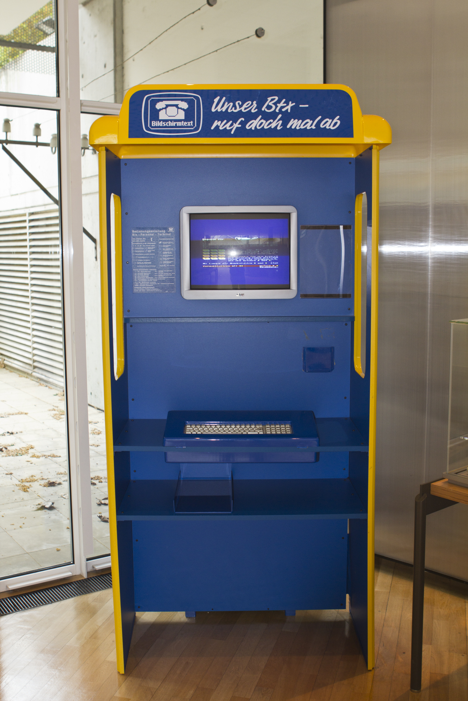
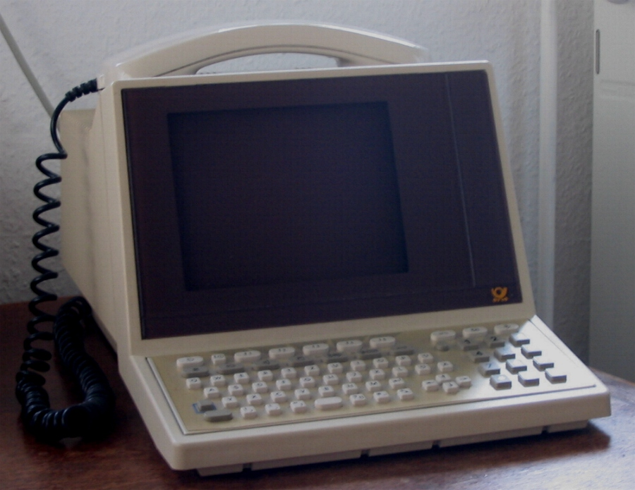

Bildschirmtext (BTX) Terminal
The pay-per-page videotex terminal: every screenful cost money, and the chip-card reader was the meter

Overview
Bildschirmtext ('screen text', abbreviated Btx or BTX) was an online videotex system launched in West Germany in 1983 by the Deutsche Bundespost, the West German postal service. Originally conceived to follow the UK Prestel specifications, it was developed on contract by Systems Designers Ltd for IBM Germany, with added features inspired by the French Minitel, creating a display standard designated in 1981 as the CEPT1 profile. Trials ran in Düsseldorf and Berlin in 1980, the network was expanded with IBM Germany, and the service launched nationwide in September 1983 at the Berlin IFA.
The interaction model is the point. BTX always transferred whole screen pages, and the receiver paid for each page received. The content provider set the price: either a per-page fee (0.01 to 9.99 Deutsche Mark) or a time-dependent fee (0.01 to 1.30 DM per minute). This pay-per-page economics turned the terminal into a meter: dedicated BTX terminals carried a chip-card reader for electronic identification and payment, so inserting your card and paging through the service was literally a transaction per screenful. The system could only be used with a modem produced by the Bundespost.
Data was transferred unauthenticated and in plaintext, leading to the BTX hack by Wau Holland of the Chaos Computer Club in 1984 — the first famous remote payment-hacking incident, exploiting the very interface economics the terminal embodied. By the 1990s the system was renamed Datex-J; it formed the basis of T-Online, Deutsche Telekom's online service, which maintained a BTX interface in its access software after 1995. The last BTX access was switched off at the end of 2001.
Deep dive
Where Minitel was a flat-rate appliance, BTX was a vending machine for screens. Every page had a price, set by its provider, and the receiver paid on receipt. Dedicated terminals therefore carried a chip-card reader for electronic ID and payment — a physical identity-and-credit ritual built into the hardware itself. Browsing was paging: you moved through numbered pages and watched the cost accumulate. This is pay-per-view as an interface paradigm, decades before anyone called it microtransactions.
Dedicated BTX terminals ('MultiTel' devices and Bundespost-issued terminals) used special function keys (SEND, function blocks), a numeric page keypad, and displayed 40×24 semigraphic text with 480×250 pixel graphics, 32 of 4096 colors. The 'Multifunktionales Telefon 12' combined the telephone and BTX terminal in one device. Adapters existed for home computers like the Commodore 64 (Siemens Decoder Module II, 1986). Data went over V.23 modems to GEC 4000-series host computers.
Because data was transferred unauthenticated and in plaintext, Wau Holland of the Chaos Computer Club demonstrated in 1984 that he could retrieve a bank's secret BTX password — later sensationalized as the 'hack that emptied a bank' (Spiegel, 1984). The BTX hack became the first mass-media hacking incident in Germany: the metered-terminal economics built into the system's plaintext protocol were its own undoing.
BTX never achieved mass adoption; the Bundespost forced users to rent its modem, uptake was low, and the service drifted until T-Online absorbed it. It ran until 2001, made obsolete by the Internet. In the museum it sits beside Minitel and CAPTAIN as the third national terminal in the pre-Internet online-service family — and the only one that charged you per page.
Team & pioneers
- Deutsche Bundespost. West German postal service; launched BTX nationwide in 1983 and controlled the modems.
- Systems Designers Ltd. UK company that developed BTX on contract for IBM Germany, based on Prestel specs.
- IBM Germany. Developed the BTX network from 1981.
- Wau Holland / Chaos Computer Club. Performed the 1984 BTX hack, the first famous remote payment-hacking incident.
- Siemens. Built the Decoder Module II (1986) letting Commodore 64 owners use BTX.
Media

